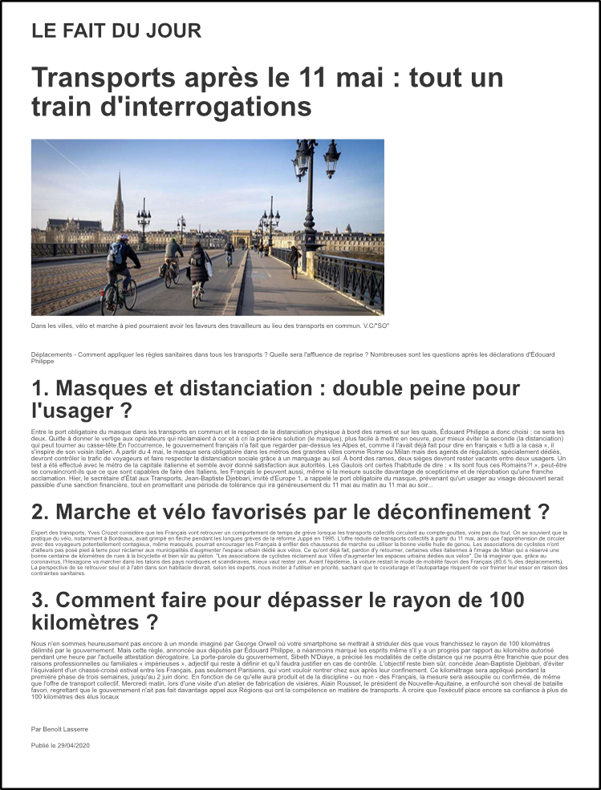

Le fait du jour Transports : tout un train d'interrogations Ramassage scolaire : « Ça devrait aller » Dans l'air, une révolution s'annonce « En métro, injouable » Dans le tram, les usagers s'interrogent
Actualité Du vert et du rouge sur la carte quotidienne Une maladie rare prise « très au sérieux » A Rostock, le modèle du dépistage préventif Vers un 1er mai au balcon
Gironde Le vin attend des mesures Ecoles : le casse-tête des maires « Il n'y aura ni classe, ni cantine » Des « projets jeunes » financés
Landes Une douche froide sur les feux d'artifice Monseigneur Breton est mort Les distributeurs de boissons à sec Un militaire meurt à l'entraînement
Charente-Maritime La vie d'artiste stoppée net 300 locataires sommés de partir Vol de masques : un « happy end inattendu »
Dordogne et Lot-et-Garonne Les Parisiens veulent leur maison à la campagne Une tribune sème le trouble, l'hôpital réagit La Dordogne devrait être en zone verte Le déconfinement se prépare Le lac de Caussade plein et prêt à l'emploi Des plaies perforantes à l'origine de la mort
Sports L'inéluctable gel de la saison Formation, la génération coronavirus Au Pôle espoir Talence, défis en vidéo Le SU Agen ne lâche pas ses jeunes